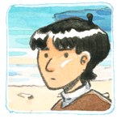
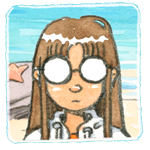
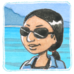
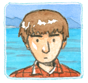

The Coral Cave est un jeu d'aventure en point & click en cours de création.
Les décors et personnages sont entièrement réalisés à l'aquarelle et animés à la main image par image.
L'Histoire
Mizuka, une petite fille japonaise habite sur une île isolée, dans l'archipel d'Okinawa.
Une nuit, elle a un rêve étrange et, à son réveil, un terrible péril menace l'île.
Mizuka devra explorer les alentours et entrer dans le monde mystérieux des espritspour avoir une chance de sauver son village !
L'Equipe
Olivier PichardScénario, décors, programmationOlivier Pichard est un dessinateur français. Il fait habituellement de la bande-dessinée et pratique de temps en temps la linogravure.
Cécile BrunPersonnages, animations, musiqueCécile Brun est une dessinatrice française. Elle a étudié le japonais et pratique la photographie argentique en marge de son activité artistique.
Ryoko KokubaTraduction japonaiseRyoko Kokuba est originaire d'Okinawa et vit actuellement à Paris. Elle est décidée à promouvoir la culture de son île à travers les créations artistiques qui s'en inspirent.
Josh TierneyTraduction anglaiseJosh Tierney est un scénariste canadien, auteur de Spera, une bande-dessinée collaborative illustrée par des dessinateurs du monde entier.